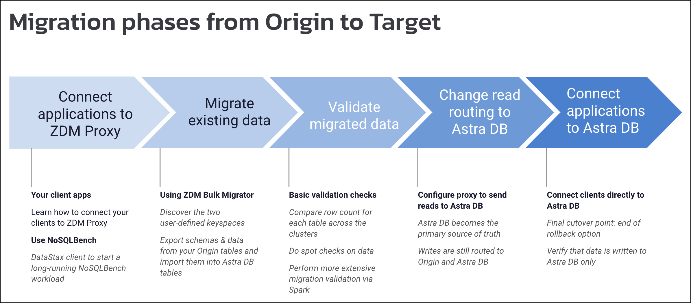

Introduction to Zero Downtime Migrations
Enterprises today depend on the ability to reliably migrate their mission-critical apps and data to cloud environments with zero downtime during the migration.
At DataStax, we’ve developed a set of thoroughly-tested self-service tools, automation scripts, examples, and documented procedures that walk you through a set of well-defined migration phases.
For example, to lower your total cost of ownership, you may want to migrate your on-premise Apache Cassandra® or DataStax Enterprise (DSE) clusters, apps, and data to our cloud-native database, DataStax Astra DB.
We call this feature Zero Downtime Migration (ZDM). It provides the following functionality:
-
You can move your application to Astra DB with no downtime and with minimal configuration changes
-
Your clusters will be kept in sync at all times by a dual-write logic configuration
-
You can easily rollback at any point, for complete peace of mind
Migration scenarios
ZDM makes it possible to migrate your apps and data across many scenarios, including:
-
From an existing self-managed Cassandra or DSE cluster to cloud-native Astra DB. For example, migrate:
-
Cassandra 3.11.x or 4.0.x to Astra DB
-
DSE 5.1.x or 6.8.x to Astra DB
-
-
From an existing Cassandra or DSE cluster to another Cassandra or DSE cluster. For example, migrate:
-
Cassandra 3.11.x to 4.0.x
-
DSE 5.1.x to DSE 6.8.x
-
Migration phases
Your migration project can occur through a sequence of phases, with zero downtime, as illustrated in this high-level view.
First, a few quick terms:
-
The origin is your existing Cassandra-based environment, whether it’s open-source Apache Cassandra or DSE. Also known as the source.
-
The target is the new environment to which you want to migrate apps and data with zero downtime. Also known as the destination.

-
The phases start with steps to connect your clients to ZDM Proxy
-
Migrating your existing schemas and data using the ZDM Bulk Migrator
-
Validating that the migrated data is correct while also performing dual writes (bifurcated) to your origin cluster and to the new target instance (cloud-native Astra DB, in this case)
-
Switching the client app reads to the target
-
Ultimately configuring that all reads and writes occur with the verified Astra DB instance
Migration workflow
Here’s a diagram to illustrate the overall migration strategy when moving apps and data from your origin to the target.

-
With no changes required to your client app code itself, ZDM Proxy does the work to route writes to your origin cluster and to the target Astra DB instance.
-
ZDM Bulk Migrator manages schemas and data exported from the origin and loads them into the target Astra DB.
-
Initially during the migration, ZDM Proxy gets reads from the origin cluster.
-
Later during the migration, when control is switched entirely to the target, all writes and reads from your apps occur with the validated Astra DB.
Migration components
The primary component of the migration tool set is ZDM Proxy, which by design is a simple and lightweight proxy that handles all the real-time requests generated by your apps.
A separate process performs the work to migrate the existing data.
The ZDM Proxy itself doesn’t have any capability to migrate data or knowledge that a migration may be ongoing, and it is not coupled to the migration process in any way.
ZDM Bulk Migrator, which is based on DataStax Bulk Loader, is used to migrate your database’s full schema, as well as unload data from your Cassandra-based database into CSV or JSON files, and subsequently loads the extracted data into the corresponding tables of the target database. Dual writes during the migration process ensure that your updates are sent to your existing origin database and simultaneously to your target database.
Role of ZDM Proxy
We created ZDM Proxy to function between the application and the source cluster and Astra DB — or any CQL-compatible data store — so that every write operation (Insert, Update, Delete) is passed through to both clusters at the desired Consistency Level:
-
If the write is successful in both clusters, it returns a successful acknowledgement to the client
-
If the write fails on either cluster, the failure is passed back to the client so that it can retry it as appropriate, based on its own retry policy.
This scheme allows for write consistency of new data to both clusters. ZDM Proxy also passes through reads to the origin cluster and returns the result to the application.
ZDM Proxy is designed to be highly available. It can be scaled horizontally so typical deployments are made up of a minimum of 3 servers. It can be restarted in a rolling fashion, for example, to rollback configuration changes for different phases of the migration.
Key features of ZDM Proxy
ZDM Proxy:
-
Allows you to lift-and-shift existing application code from its source cluster to Astra DB with a simple change of a connection string.
-
Reduces risks to upgrades and migrations by decoupling the source from the destination cluster and allowing there to be an explicit cut-over point once you’re satisfied with the destination cluster.
-
Bifurcates writes to both clusters during the migration process synchronously.
-
Returns (for read operations) the response from a designated source of truth. During a migration, the origin cluster typically constitutes the source of truth. Near the end of the migration, you’ll shift the source of truth for reads to be the target.
-
Can be configured to also read asynchronously from the target cluster. This capability is done so you can observe what read latencies and throughputs the target cluster can achieve without returning those results to the client. The asynchronous read from the target cluster is not sent back to the client. This design implies that failure on asynchronous reading from the destination cluster does not cause an error on the client application. Asynchronous reads can be enabled and disabled dynamically with a rolling restart of the proxy instances.
|
Any additional read load on the target cluster may impact the target cluster’s ability to keep up with writes. This behavior is expected and desired. The idea is to mimic the full read and write load on the target cluster so there are no surprises during the last migration phase; that is, after cutting over completely to the target cluster. |
Benefits
When moving your apps & data from on-premise Cassandra Query Language (CQL) based data stores (Apache Cassandra or DSE) to a cloud-native database (CNDB) like Astra DB, it’s important to acknowledge the fundamental differences ahead. With "on-prem," of course, you have total control of the data center’s physical infrastructure, software configurations, and your custom procedures. At the same time, with on-prem clusters you take on the cost of infrastructure resources, maintenance, operations, personnel.
Ranging from large enterprises to small teams, IT managers, operators, and developers are realizing that the Total Cost of Ownership with cloud solutions is much lower than continuing to run on-prem physical data centers.
A CNDB like Astra DB is a different environment. Running on proven cloud providers like AWS, Google Cloud, and Azure, Astra DB greatly reduces complexity and increases convenience by surfacing a subset of configurable settings, providing a well-designed UI known as Astra console, and a set of APIs to interact programmatically with your Astra DB organizations and databases.
What’s next?
If you’re new here, check out our FAQs.
Or jump right in and learn how to prepare your existing environment for migration.